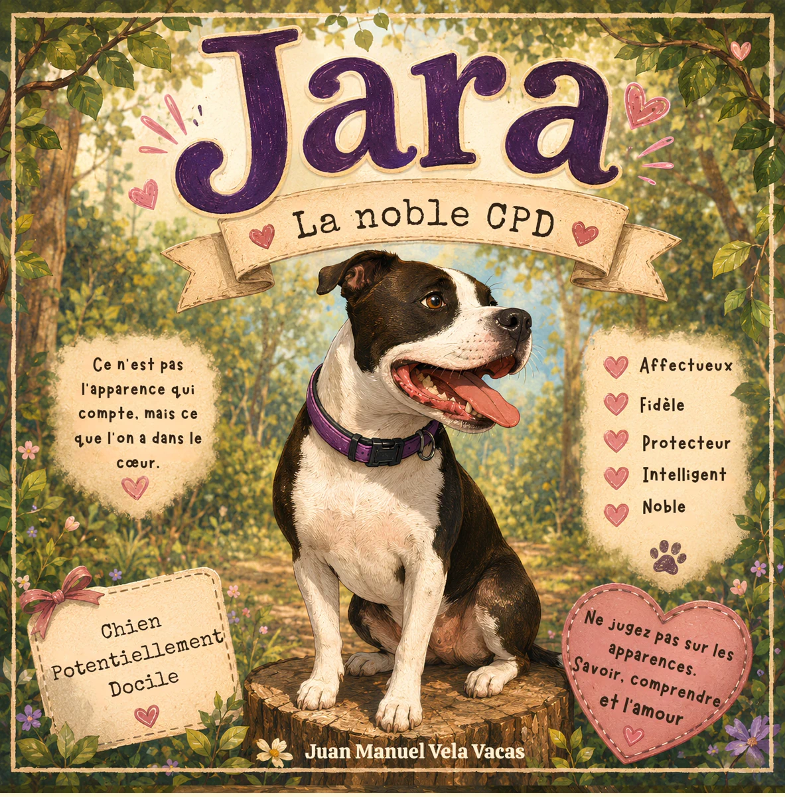
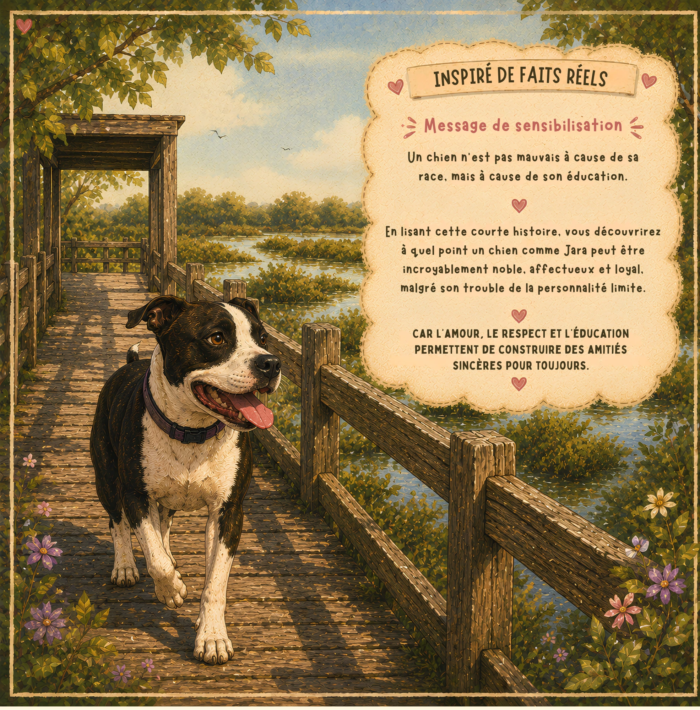
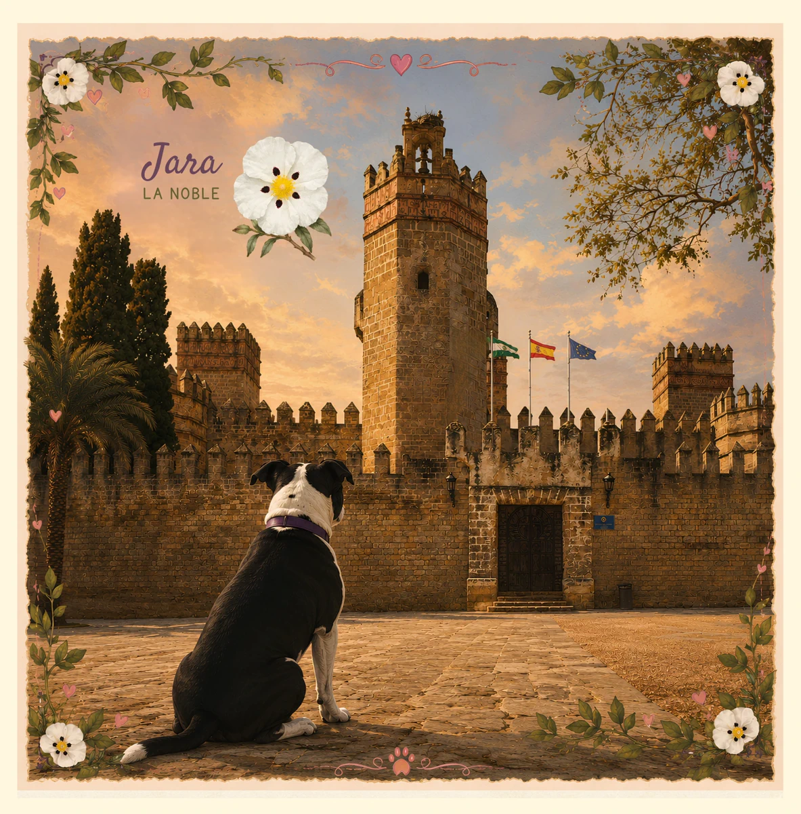
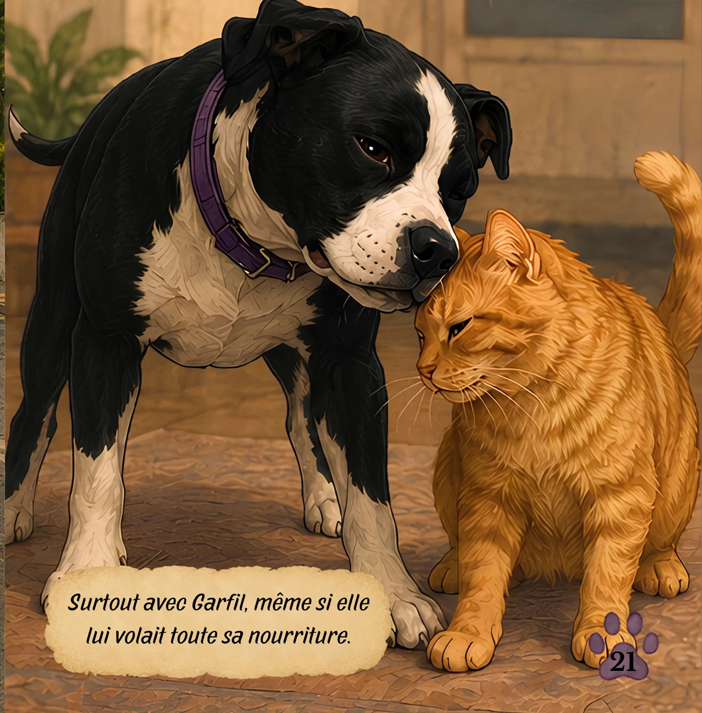

Jara,
la noble CPD
Jara est une chienne qui nous montre qu'il ne faut jamais juger sur les apparences.
Car l'amour, le respect et l'éducation construisent de véritables amis pour la vie.
Ce n'est pas son apparence qui compte.
C'est son cœur.
EspagnolLangue originale · 2 formats disponibles
Édition classique
- 40 pages
- Lecture sur papier
Édition numérique
- Téléchargement immédiat
- Compatible avec Kindle et l'application Kindle
AnglaisTraduction anglaise · 2 formats disponibles
Édition classique
Édition numérique
FrançaisTraduction française · 2 formats disponibles
Édition classique
- 40 pages
- Lecture sur papier
Édition numérique
Faites connaissance avec Jara
Découvrez quelques illustrations et pages du conte qui racontent l'histoire de Jara.



Une histoire qui laisse une empreinte
Un conte pour parler d'empathie, d'éducation et de l'importance de connaître avant de juger. En France, certains chiens sont classés comme CPD (Chiens Potentiellement Dangereux). Mais dans cette histoire, CPD signifie Chien Potentiellement Docile, car Jara est affectueuse, loyale, protectrice, intelligente et noble.
Un conte pour petits et grands qui rappelle que les apparences ne racontent jamais toute l'histoire.
Jara a aussi une mission 🐾
Jara est née d'une idée très simple : aucun chien ne devrait être jugé uniquement par sa race ou par une étiquette.
C'est pourquoi Juan Manuel souhaite offrir des exemplaires de cette histoire à des refuges et des associations de protection animale de sa région, afin que Jara puisse toucher les enfants et les familles et les aider à voir chaque chien pour ce qu'il est vraiment : un individu avec sa propre histoire et son propre cœur.
Vous travaillez dans un refuge ou une association de protection animale ?
Si vous souhaitez recevoir des exemplaires de Jara pour votre centre, vous pouvez contacter Juan Manuel.
Que découvriront les enfants ?
- L'empathie envers les animaux.
- Le bien-être animal et la responsabilité.
- L'importance de ne pas juger selon l'apparence ou la race.
- Le respect, le vivre-ensemble et le plaisir de la lecture.